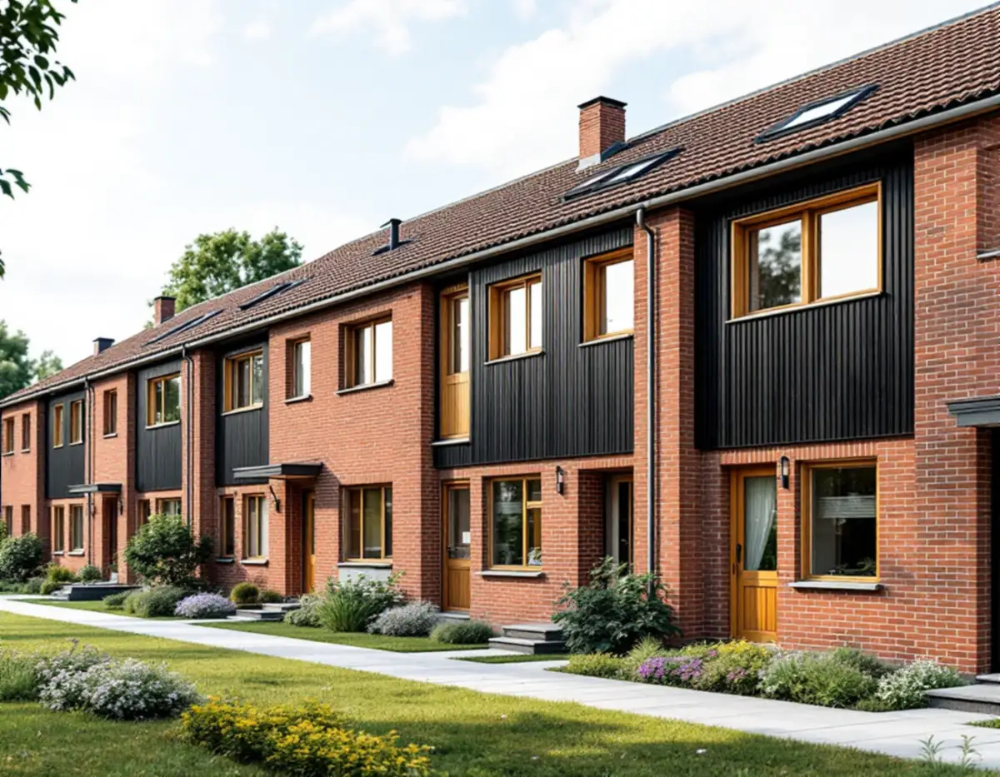
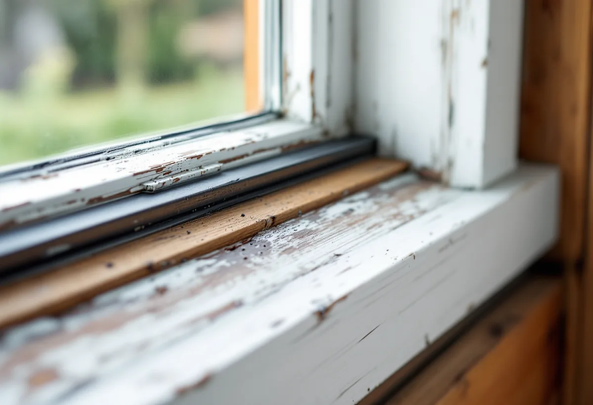

Besiktning
Varje fönster bedöms för sig: kitt, färg, trä och beslag.
För radhusen i Tuna skriver Botkyrka kommun i klartext att de ursprungliga dörrarna och fönstren ska behållas. Det gör fönsterrenovering till det naturliga valet när fönstren börjar bli slitna. Geal Entreprenad AB renoverar fönster på radhus och villor i Botkyrka och utgår från de fönster som redan sitter i huset.

Botkyrkas kulturmiljöprogram beskriver Tuna som representativt för det tidiga 1960-talets bebyggelse med hög kvalitet i gestaltning och genomförande. Området planerades under sent 1950-tal och byggdes ut i början av 1960-talet som en grannskapsenhet med villor, radhus, skola, torg och kyrka.
Bland småhusen lyfter programmet fram radhusområdet söder om Lindhovsvägen som välbevarad radhusbebyggelse med hög arkitektonisk kvalitet. Karaktäristiskt är kombinationen av tegel och trä i fasaderna och det enkla, sakliga formspråket.
Kulturmiljöprogrammets riktlinje för radhusen i Tuna säger att bebyggelsens tidstypiska karaktär ska värnas, att ursprungliga dörrar och fönster ska bibehållas och att det enkla, sakliga formspråket ska respekteras. I ett område med så tydliga linjer märks ett avvikande fönster direkt.
Riksantikvarieämbetet skriver att det i modernare hus framför allt är fönstrens synliga mått och proportioner som är viktiga att bevara. Vid en renovering behåller vi därför karm, bågar och indelning och lagar det som är skadat, i stället för att ersätta fönstret med något som bara liknar det.
Botkyrka kommun skriver att en fasadändring kan vara att byta eller sätta in nya fönster, och att ett byte av kulör också räknas dit. Utökad lovplikt kan gälla för fasadändringar i områden som är särskilt värdefulla, och kommunen hänvisar till webbkartans lager Kulturmiljöprogram för att se vilka områden som berörs.
En renovering där fönstret lagas och målas i samma kulör ändrar inte husets utseende. Ska bågarna få en annan kulör eller ska något i fönstret ändras kontrollerar vi kartan och detaljplanen först. Om fönsterbyten i kommunen kan du läsa under fönsterbyte i Botkyrka.
Riksantikvarieämbetet påpekar att två vanliga skäl för att byta gamla fönster är att värme- och ljudisoleringen ska förbättras, men att det finns andra och billigare lösningar. Moderna tätningslister ger en avsevärd förbättring av både ljud- och värmeisolering, och det är innerbågen, inte ytterbågen, som ska tätas.
Fönstret ska målas och justeras innan listerna sätts upp, och en för tjock list gör fönstret svårstängt och kan ge spänningar som skadar båge och glas. Vi mäter springan innan listtypen väljs.
Riksantikvarieämbetet råder att arbetet inleds med en systematisk besiktning av varje fönster för sig när det är osäkert om fönstren behöver vanligt underhåll eller större reparationer. Utan besiktning är det enligt myndigheten alltför lätt att döma ut fönster som mycket väl går att bevara.
Ofta är det bottenstyckena i karm och båge som skadats, och då går det i regel att byta bara de skadade partierna. Ibland måste en båge nytillverkas, men myndigheten påpekar att ett kontinuerligt underhåll minskar behovet av större ingrepp i framtiden. Om måleri i Botkyrka i övrigt kan du läsa under målare i Botkyrka.

Varje fönster bedöms för sig: kitt, färg, trä och beslag.
Kulturmiljöprogram och detaljplan kontrolleras om något ska ändras.
Fönster för fönster, med lagningar och tätning för sig.
Skrapning, lagning av skadade delar, kittning och målning.
Bågarna justeras och innerbågen tätas.
Vi går igenom fönstren och hur de sköts framåt.
Reparation och målning av fönster på ett småhus som du äger och bor i räknas som rotarbete hos Skatteverket. Avdraget gäller arbetskostnaden.
Avdraget är högst 30 procent av arbetskostnaden, högst 50 000 kronor per person och år och högst 75 000 kronor tillsammans med rutavdrag. Material och resor ger inget avdrag. Geal drar avdraget direkt på fakturan.
Antal fönster och bågar, hur mycket kitt och färg som behöver tas bort, lagningar av trä, beslag och tätning. Efter ett gratis platsbesök får du ett skriftligt kostnadsförslag.
Byta eller renovera fönster.
Fönsterbyte i Stockholm →Takbyte, takbesiktning och plåtarbeten.
Takläggare i Botkyrka →Tullinge, Uttran och Tumba.
Takrenovering i Botkyrka →Kartlagren, checklistan och vattnet.
Attefallshus i Botkyrka →Flytt av badrum, stammar och frånluft.
Badrumsrenovering i Botkyrka →Nytt hus, utfart och byggarbetsplats.
Byggföretag i Botkyrka →Tullinges villor och kulörbytet.
Fasadmålning i Botkyrka →Fönstertyper per epok i Botkyrkas villor.
Fönsterbyte i Botkyrka →Kataloghus, källargolv och trägolv.
Golvläggare i Botkyrka →Kök i villor och radhus, för att bo kvar.
Köksrenovering i Botkyrka →Tidstypiska kulörer från 1960-tal till gamla byar.
Målare i Botkyrka →Rännor, stuprör och plåttak i Botkyrka.
Plåtslagare i Botkyrka →Altan, plank och förråd i villaområdena vid järnvägen.
Snickare i Botkyrka →Material, solpaneler och takkupor.
Takbyte i Botkyrka →Ny tapet på träfiberskivor och gamla lager.
Tapetsering i Botkyrka →Villorna i Tullinge, Uttran och kartan.
Tillbyggnad i Botkyrka →Tullingehuset i omgångar.
Totalrenovering i Botkyrka →